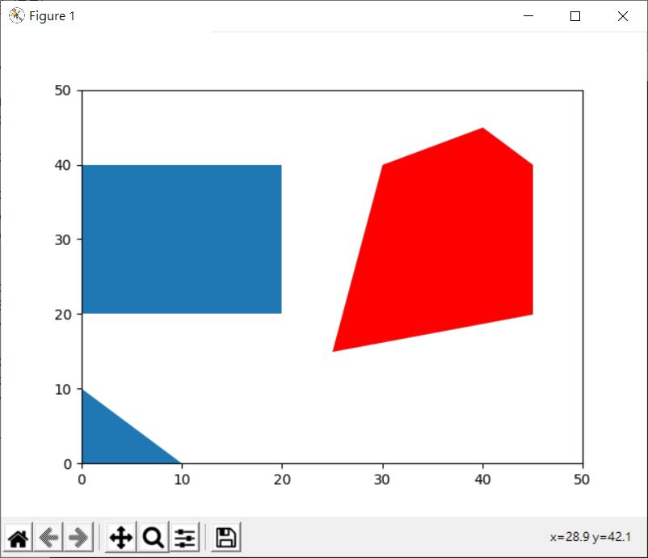
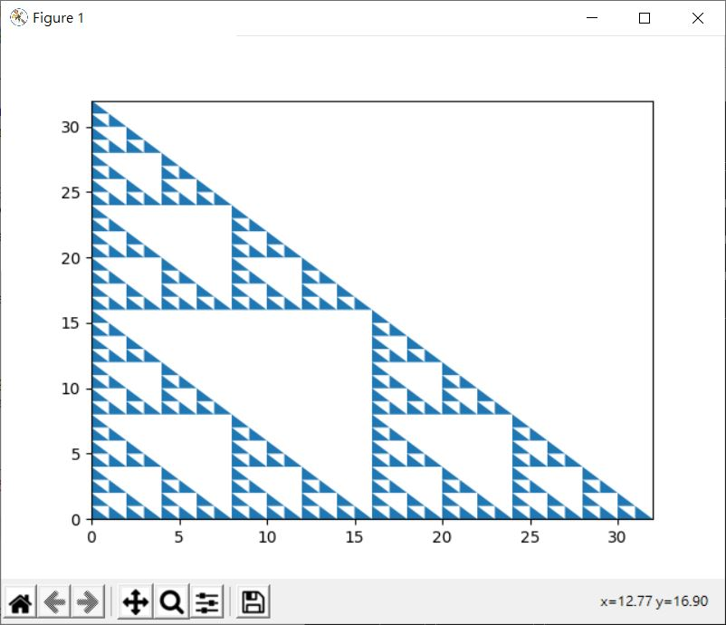
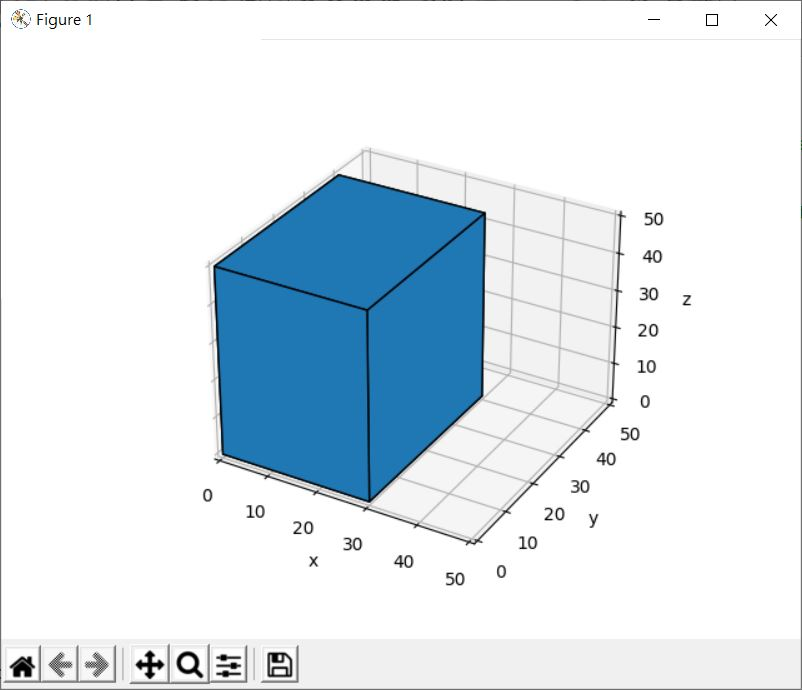
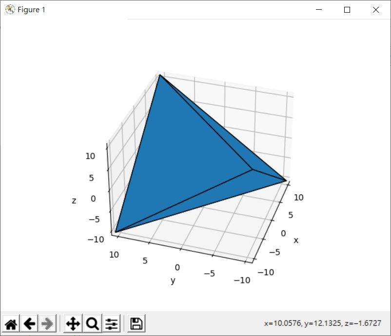

對於繪圖而言，多邊形繪製是個常見需求，想在 Matplotlib 繪製多邊形，可以透過 matplotlib.collections 的 PolyCollection 收集多邊形頂點，例如：
import matplotlib.pyplot as plt
from matplotlib.collections import PolyCollection
ax = plt.gca()
ax.add_collection(PolyCollection([
[[0, 0], [10, 0], [0, 10]], # 三角形
[[0, 20], [20, 20], [20, 40], [0, 40]] # 長方形
]))
ax.add_collection(PolyCollection([
[[25, 15], [45, 20], [45, 40], [40, 45], [30, 40]] # 五邊形
], linewidth=0.1, facecolor="red", edgecolor="black"))
ax.set_xlim([0, 50])
ax.set_ylim([0, 50])
plt.show()
這可以繪製出以下的圖案：

來運用多邊形繪製來產生〈NumPy 陣列資料型態〉中的謝爾賓斯基三角形：
import numpy as np
import matplotlib.pyplot as plt
from matplotlib.collections import PolyCollection
def sierpinski(n):
def quotientAndRemainderZero(elem, n):
quotient = elem // n
remainder = elem % n
return quotient & remainder == 0
quotientAndRemainderZero = np.frompyfunc(quotientAndRemainderZero, 2, 1)
nums = np.arange(n ** 2)
nums = nums[np.where(quotientAndRemainderZero(nums, n))]
return (nums % n, nums // n)
# 在每個 x, y 建立一個三角形
def tri(x, y):
return [[x, y], [x + 1, y], [x, y + 1]]
tri = np.frompyfunc(tri, 2, 1)
n = 32
x, y = sierpinski(n)
ax = plt.gca()
ax.add_collection(PolyCollection(tri(x, y)))
ax.set_xlim([0, n])
ax.set_ylim([0, n])
plt.show()
畫出來的效果如下：

若要在三維空間繪製多邊形，可以透過 mpl_toolkits.mplot3d.art3d 的 Poly3DCollection，例如在〈Matplotlib 三角曲面〉透過六次呼叫 plot_surface 來繪製立方體的範例，就可以改為：
import numpy as np
import matplotlib.pyplot as plt
from mpl_toolkits.mplot3d.art3d import Poly3DCollection
width = 30
depth = 40
height = 50
def box(width, depth, height):
faces = Poly3DCollection([
[[0, 0, 0], [width, 0, 0], [width, depth, 0], [0, depth, 0]],
[[0, 0, height], [width, 0, height], [width, depth, height], [0, depth, height]],
[[0, 0, 0], [width, 0, 0], [width, 0, height], [0, 0, height]],
[[0, depth, 0], [width, depth, 0], [width, depth, height], [0, depth, height]],
[[0, 0, 0], [0, depth, 0], [0, depth, height], [0, 0, height]],
[[width, 0, 0], [width, depth, 0], [width, depth, height], [width, 0, height]]
])
faces.set_edgecolor('black')
ax = plt.axes(projection='3d')
ax.add_collection3d(faces)
ax.set_xlabel('x')
ax.set_ylabel('y')
ax.set_zlabel('z')
lim = max(width, depth, height)
ax.set_xlim([0, lim])
ax.set_ylim([0, lim])
ax.set_zlim([0, lim])
plt.show()
box(width, depth, height)
這可以產生以下的立方體：

既然如此，要用 Poly3DCollection 來繪製正四面體也是可以的：
import numpy as np
import matplotlib.pyplot as plt
from mpl_toolkits.mplot3d.art3d import Poly3DCollection
def tetrahedron(width):
n = width / (2 ** 0.5) * 0.5;
xs = np.array([n, -n, n, -n])
ys = np.array([n, n, -n, -n])
zs = np.array([n, -n, -n, n])
coord = np.dstack((xs, ys, zs))[0]
faces = Poly3DCollection([
coord[[0, 1, 2]],
coord[[1, 2, 3]],
coord[[2, 3, 0]],
coord[[3, 0, 1]]
])
faces.set_edgecolor('black')
ax = plt.axes(projection='3d')
ax.add_collection3d(faces)
ax.set_xlabel('x')
ax.set_ylabel('y')
ax.set_zlabel('z')
ax.set_xlim([-n, n])
ax.set_ylim([-n, n])
ax.set_zlim([-n, n])
plt.show()
width = 30
tetrahedron(width)
畫出來的效果如下：
